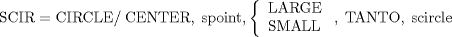
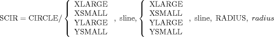
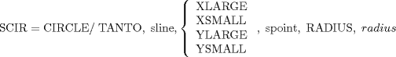
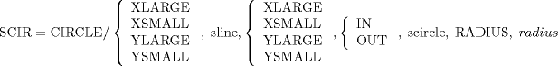
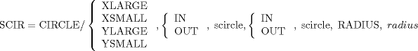

| 3.6. The Circle (CIRCLE) Definitions | ||
|---|---|---|
 | Chapter 3. Geometric Statements in APT |  |
| 3.6. The Circle (CIRCLE) Definitions | ||
|---|---|---|
| | Chapter 3. Geometric Statements in APT | |
A circle is the locus of points that are equidistant from a fixed point. The APT processor defines a circle as a cylinder perpendicular to the XY plane.
SCIR = CIRCLE/ xcoord, ycoord, zcoord, radius
SCIR = CIRCLE/ xcoord, ycoord, radius
SCIR = CIRCLE/ CENTER, spoint, TANTO, sline
SCIR = CIRCLE/ CENTER, spoint, spoint
SCIR = CIRCLE/ spoint, spoint, spoint

![[Note]](images/note.png) | Note |
|---|---|
There are two possibilities. The modifiers LARGE and SMALL indicate the circle is to be chosed with the largest or smallest (respectively) radius. |

C1 = CIRCLE/ YLARGE, L2, YLARGE, L1, RADIUS, .375 C2 = CIRCLE/ YSMALL, L1, XLARGE, L2, RADIUS, .375 C3 = CIRCLE/ YSMALL, L2, YSMALL, L1, RADIUS, .375 C4 = CIRCLE/ XSMALL, L2, YLARGE, L1, RADIUS, .375 $$ or C1 = CIRCLE/ XLARGE, L2, XSMALL, L1, RADIUS, .375 C2 = CIRCLE/ XLARGE, L1, YLARGE, L2, RADIUS, .375 C3 = CIRCLE/ XSMALL, L2, XLARGE, L1, RADIUS, .375 C4 = CIRCLE/ YSMALL, L2, XSMALL, L1, RADIUS, .375


C1 = CIRCLE/ YLARGE, LG, XSMALL, OUT, CG, RADIUS, 1. C2 = CIRCLE/ YLARGE, LG, XSMALL, IN, CG, RADIUS, 1. C3 = CIRCLE/ YSMALL, LG, XSMALL, OUT, CG, RADIUS, 1. C4 = CIRCLE/ YSMALL, LG, XSMALL, IN, CG, RADIUS, 1. C5 = CIRCLE/ YLARGE, LG, XLARGE, IN, CG, RADIUS, 1. C6 = CIRCLE/ YSMALL, LG, XLARGE, IN, CG, RADIUS, 1. C7 = CIRCLE/ YLARGE, LG, XLARGE, OUT, CG, RADIUS, 1. C8 = CIRCLE/ YSMALL, LG, XLARGE, OUT, CG, RADIUS, 1.

| |  | |
| 3.5. The Plane (PLANE) Definitions |  | 3.7. The Cylinder (CYLNDR) Definitions |